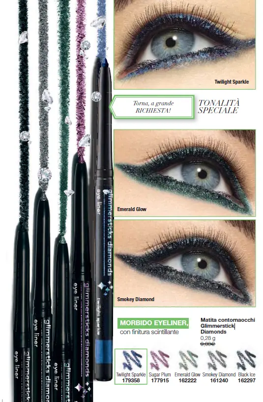
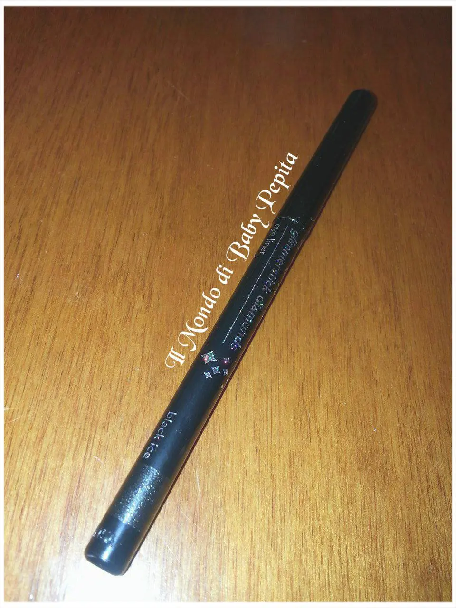
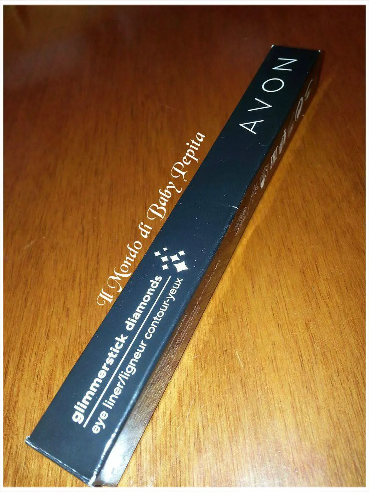
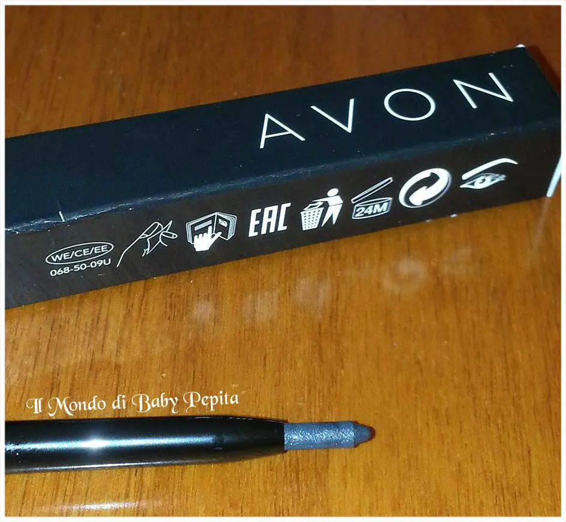
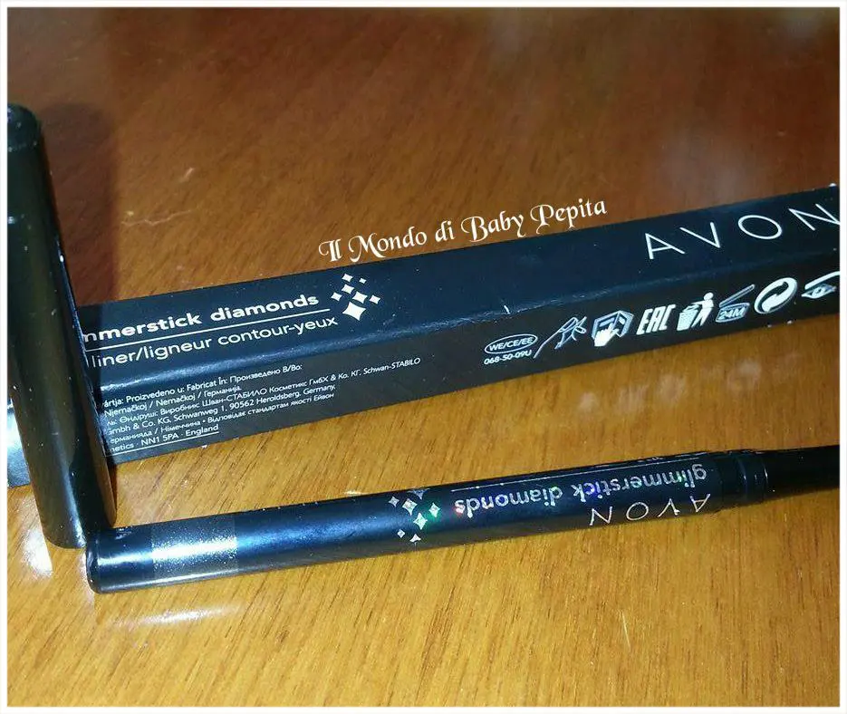
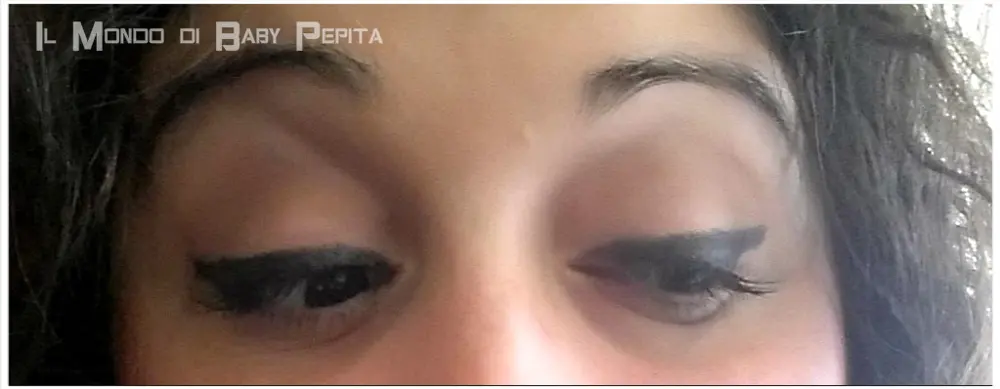
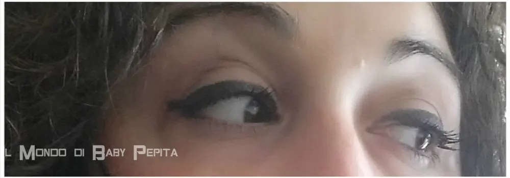
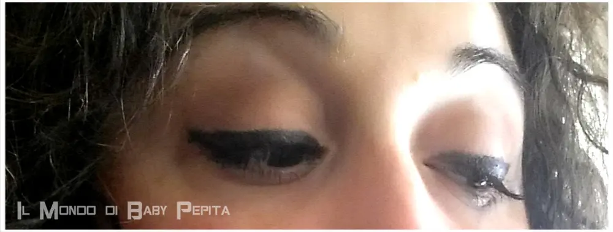
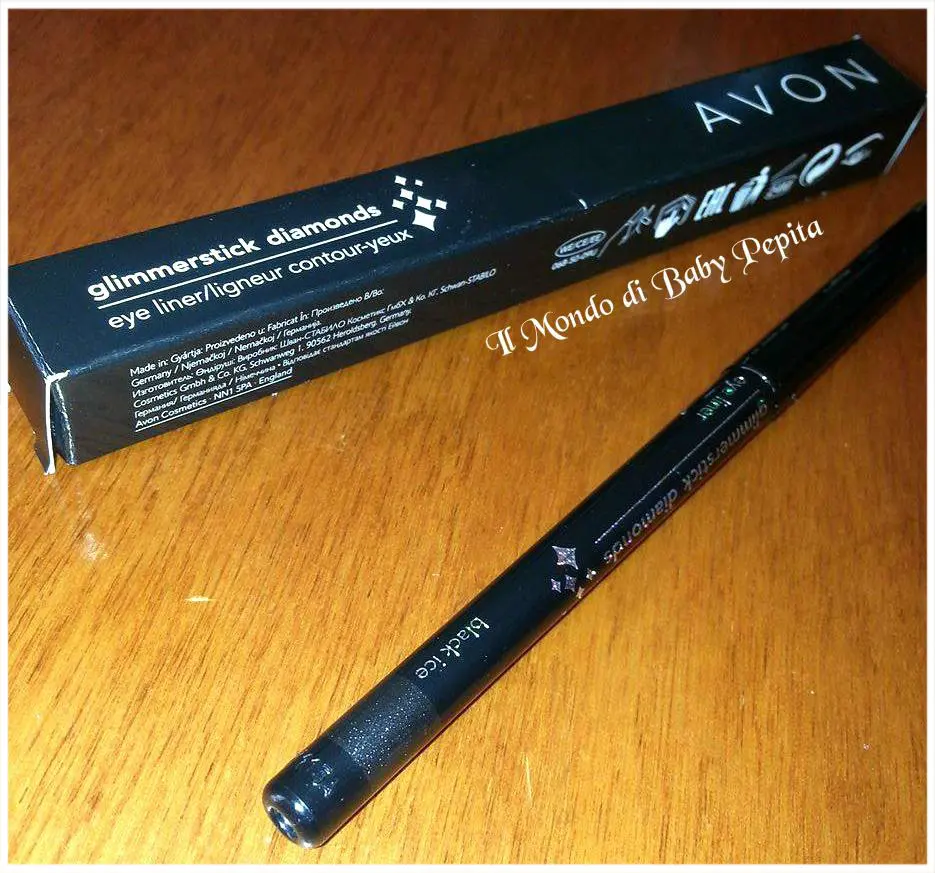
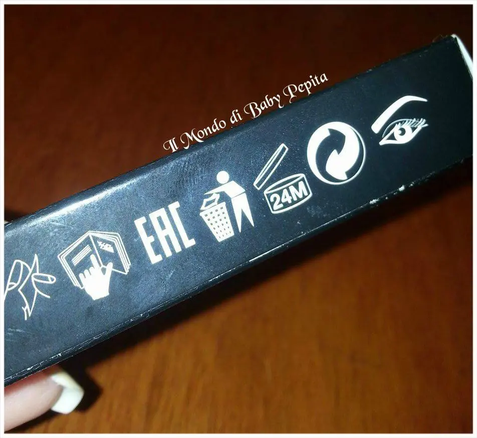

Avon - Matita contornaocchi Glimmersticks Diamonds
Parliamo oggi di bellezza e di un accessorio makeup che il 90% delle donne non rinuncia, la matita occhi nera.
Questa di cui andrò a mostrare è dell'Avon della linea glimmersticks diamonds, perchè diamonds? perchè è glitterata . .
Essendo appunto una matita contorno occhi brillantinata è molto consigliato di non usarla all'interno dell'occhio poichè potrebbe provocare fastidio, ma bensì usarla solo ed esclusivamente per uso esterno. Disponibile in 5 tonalità:
Disponibile in 5 tonalità:
- Twlight Sparlde
- Sugar Plum
- Emerald Glow
- Smokey Diamond
- Black Ice

Quella che ho io è la tonalità Black Ice, in pratica quella che più si avvicina al nero, perchè nera intensa non c'è.
Il packaching è tutto nero, con le scritte del prodotto ovvero GLIMMERSTICK DIAMONDS sia sulla scatola che sulla matita stessa.


Possiamo capire il colore della matita oltre a leggerlo sul lato ma anche visivamente poichè c'è una fascia all'estremità della parte dietro della matita appunto che è del colore della stessa.

Il metodo di apertura non è quello delle matite da temperare ma bensì si aprono girandole come un rossetto per intenderci e la comodità sta proprio nel fatto che non c'è necessità di temperarle.

Ha un finish come stesso il nome suggerisce, shimmer, con questi microglierrini che vengono colti dalla luce.

Ha una texuta cremosa e scivola facilmente sulla palpebra ottenendo già il risultato sperato alla prima stesura.

CONTRO:
L'unica pecca che ho riscontrato sulla mia pelle è che non dura quanto speravo ma dopo un pò la vedo scrivere sulla parte alta dell'occhio creando una linea fastidiosa, oppure cola dopo un pò di ore che la indosso.Il mio consiglio è di usarla solo con una base sotto di correttore, se invece come me che spesse volte fa trucchi veloci senza base non la proporrei molto.

Quantità di prodotto: 0,28 g

Prezzo: 7,00 € (dipende poi dalle offerte che mette Avon via via e può oscillare di qualche euro)
Scadenza del prodotto: 24 mesi

Se siete interessati al prodotto o al catalogo Avon, poichè si acquista solo tramite rappresentanza, potete contattare la presentatrice della vostra zona o se non conoscete nessuno potete anche rivolgervi a me.
 Per tutto il resto seguitemi sui miei social:FACEBOOKINSTAGRAMTWITTERYOUTUBE
Per tutto il resto seguitemi sui miei social:FACEBOOKINSTAGRAMTWITTERYOUTUBE